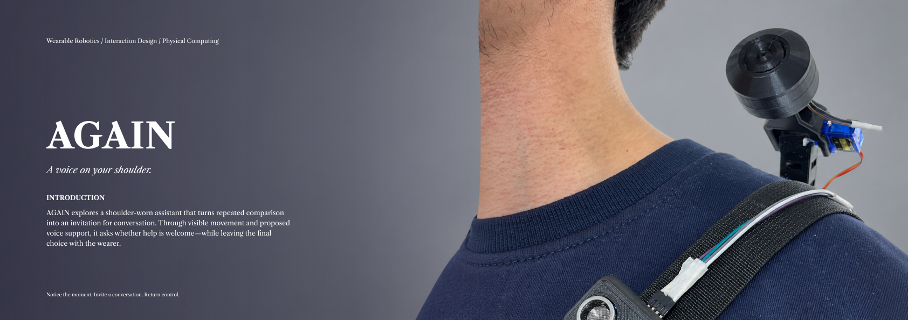

AGAIN
A voice on your shoulder.
AGAIN explores a shoulder-worn assistant that turns repeated comparison into an invitation for conversation. Through visible movement and proposed voice support, it asks whether help is welcome—while leaving the final choice with the wearer.
01 / Context & research
Portfolio spread · 1684 × 595
Limited attention meets an expanding field of choices. Mathematical metaphors and timing research frame the design question.
View full size ↗02 / Evidence & design roadmap
Portfolio spread · 1684 × 595
Observe contextual cues, ask whether help is wanted, offer advice, and return to rest. A pause alone does not establish hesitation.
View full size ↗03 / Finger-motion test & prototyping
Portfolio spread · 1684 × 595
A camera-based finger-motion test and a printed shoulder mechanism driven by three SG90 servos. A calibrated rate threshold could prompt an invitation; integrated AI-triggered motion remains planned.
View full size ↗04 / Scenario & evaluation
Portfolio spread · 1684 × 595
From a folded resting posture to an invitation for conversation. Evaluation focuses on useful timing, wearer control, and physical comfort.
View full size ↗Making attention visible.
The existing mechanical demo uses an ESP32, three SG90 servos, and 3D-printed parts to fold, rise, and retract. Its structure was adapted from an earlier project and developed through model iterations.
A separate camera test streams MediaPipe hand landmarks to TouchDesigner, using index- and thumb-tip positions from both hands. Active tapping shows recurring cycles in the recorded clip; the hesitation-labelled clip is less periodic. The test tracks coordinates, without calculating joint angles.
The current wearable ultrasonic sensor and buzzer do not provide camera or microphone functions.
From motion to dialogue.
An instrumented Android shopping task would supply actual touch timestamps alongside the tested hand tracking. A XiaoZhi-based voice service with Qwen would support dialogue, with MCP tool calls requesting bounded motion from the ESP32.
End-to-end AI integration and user evaluation remain planned work. A proposed trigger would use a personally calibrated movement-rate threshold and hold time, with valid tracking and task context, before raising the arm to ask whether help is wanted. No numeric threshold has yet been validated. Hand motion neither proves screen contact nor directly measures indecision.
Research references & interpretation
- OpenStax, Calculus Volume 2, §3.7. Gabriel’s Horn is used as a mathematical metaphor for finite capacity and an endless surface, not as a model of human cognition.
- Ferguson (1989), Who Solved the Secretary Problem? The 1/e stopping threshold assumes a known number of randomly ordered options and irreversible choices. It is not a shopping rule.
- Irie et al. (2022), Mental arithmetic modulates temporal variabilities of finger-tapping tasks in a tempo-dependent manner. Supports task-dependent differences in timing variability, not a direct detector of hesitation.
- Holm et al. (2017), Executive control and working memory are involved in sub-second repetitive motor timing. Laboratory memory-load findings motivate a design hypothesis that still needs validation in phone use.
The literature diagrams on spreads 1–2 are qualitative summaries or illustrative schematics. The finger-motion plots on spread 3 are traced from screenshots of the preliminary camera test, with individual vertical scales and an uncalibrated time axis. They do not establish numeric tapping frequencies, a hesitation ratio, or recognition accuracy.